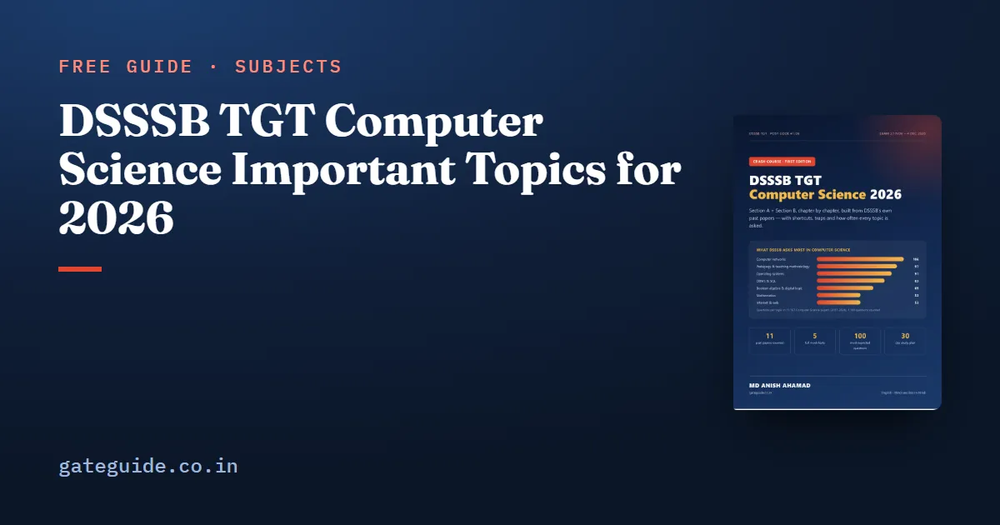

DSSSB TGT Computer Science Important Topics for 2026

The important topics for DSSSB TGT Computer Science are not a guess: past papers show them clearly. From 1,100 Section B questions in 11 TGT Computer Science papers, five topics give roughly 40 questions per paper. This guide lists them in order, with the exact concepts that keep coming back inside each.
In this guide
- Key takeaways
- The words you will meet
- 1. Computer networks (9.6 per paper)
- 2. Teaching methodology (8.8 per paper)
- 3. Operating systems (8.3 per paper)
- 4. DBMS and SQL (7.5 per paper)
- 5. Boolean algebra and digital logic (6.3 per paper)
- The next tier
- Topics you can treat lightly
- How to study a high-weight topic
- What not to do
- A final check before the exam
- Quick revision
Key takeaways
- Top five by count: networks (9.6 per paper), teaching methodology (8.8), operating systems (8.3), DBMS/SQL (7.5), digital logic (6.3).
- Next tier: web technology and maths (4.8 each), software engineering (4.0), number systems (3.4), C (3.3).
- Inside each topic, a small set of concepts repeats — learn those first.
- Non-core topics (accounting, economics, physics) are about 13% of Section B: learn the repeated facts quickly.
The words you will meet
- Per paper — the average number of questions a topic gave in one 100-question Section B.
- Repeated concept — the same idea asked again with new wording or numbers, e.g. "which layer handles routing".
1. Computer networks (9.6 per paper)
| Concept | What they ask |
|---|---|
| OSI vs TCP/IP layers | which layer does routing, framing, encryption, end-to-end delivery |
| Port numbers | HTTP 80, HTTPS 443, FTP 20/21, SSH 22, Telnet 23, SMTP 25, DNS 53, POP3 110 |
| Devices | hub (physical), switch and bridge (data link), router (network), gateway |
| IP addressing | classes, private ranges, default masks, usable hosts in a subnet |
| Media and modes | guided vs unguided, simplex/half/full duplex |
| Protocols | ARP, RARP, DHCP, ICMP, SMTP vs POP3/IMAP |
Practise these with our networking questions guide.
2. Teaching methodology (8.8 per paper)
Ten questions at the end of Section B: Piaget's stages, Vygotsky's ZPD, formative vs summative assessment, teaching approaches (teacher-, student-, subject-centred), methods and founders, and schemes (SSA 2001, RTE 2009, NEP 2020). See the teaching methodology guide.
3. Operating systems (8.3 per paper)
| Concept | What they ask |
|---|---|
| Scheduling | FCFS, SJF, Round Robin waiting time; which can starve |
| Deadlock | four conditions, Banker's algorithm (avoidance) |
| Memory | paging, page faults (FIFO/LRU/Optimal), thrashing, Belady's anomaly |
| Processes | states, fork count, threads, system calls |
| Linux | ls, pwd, chmod (octal permissions), ps, grep, cp/mv/rm, directory structure |
4. DBMS and SQL (7.5 per paper)
Keys (primary, candidate, foreign), normal forms (1NF, 2NF, 3NF, BCNF), SQL clauses (WHERE vs HAVING, GROUP BY, ORDER BY, DISTINCT), aggregate functions and NULLs, DDL/DML/DCL/TCL commands, ACID, joins, and E-R diagram symbols.
Trap:
COUNT(*)counts every row;COUNT(column)andAVG(column)skip NULLs. DSSSB has asked this distinction in more than one paper.
5. Boolean algebra and digital logic (6.3 per paper)
Gates and truth tables, universal gates (NAND, NOR), De Morgan's laws, absorption (A + AB = A), half and full adders, multiplexers and decoders, flip-flops. The 2021 papers alone asked 55 questions here.
The next tier
| Topic | Per paper | Repeated concepts |
|---|---|---|
| Web technology | 4.8 | HTML tags and attributes, CSS selectors, JavaScript types, XML well-formed vs valid, DOM vs SAX |
| Mathematics | 4.8 | sets and relations, graph degree and edges, interpolation, probability, statistics |
| Software engineering | 4.0 | SDLC models (waterfall, spiral, prototype), testing types, cohesion and coupling |
| Number systems | 3.4 | base conversion, 1's and 2's complement, BCD, Gray code |
| C programming | 3.3 | operators and precedence, loops, pointers, format specifiers |
The full year-by-year counts are in our previous year papers analysis, and our 45-day strategy puts these topics into a daily plan.
Topics you can treat lightly
Some syllabus headings appeared only a few times in 11 papers: theory of computation and compilers (about 6 questions in total), emerging technology (12), office applications (11). Give them a single revision session of facts — enough to recognise the standard answers, nothing more.
Remember: a light topic is not a skipped topic. One revision session per light topic still takes only a few hours in total and protects two or three marks.
How to study a high-weight topic
A topic that gives eight or nine questions per paper deserves a method, not just a reading. Begin with the concept map: list the ideas inside the topic and mark which ones past papers asked. For operating systems, that list is scheduling, deadlock, memory management, processes and Linux commands. Then study each idea with one goal — being able to answer a one-line question about it in under thirty seconds. Most DSSSB questions are short: which layer does routing, what does chmod 755 mean, which normal form removes partial dependency.
After the concepts, solve questions of the same style. The aim is to recognise the question pattern instantly, because recognition is what saves time in a two-hour paper. Finally, write a half-page sheet of the facts you had to look up twice. That sheet becomes your revision material for the last week, and it is far more useful than re-reading a whole chapter.
What not to do
Do not try to cover every syllabus heading equally. The official syllabus lists 32 headings, and some of them — theory of computation, mobile computing, compilers — appeared only a handful of times in eleven papers. Give them a quick read so that the standard facts are familiar, but spend the bulk of your hours on the topics that return in every paper. Equally, do not ignore the teaching-methodology block because it feels unrelated to computer science. Its ten questions are a quarter of the Section B qualifying marks for a General candidate.
A final check before the exam
In the last week, test yourself on each of the five main topics with a single question: can I explain it in two minutes to a friend? If you can explain the OSI layers, a scheduling calculation, the normal forms, a De Morgan simplification and Piaget's stages without notes, the core of Section B is secure.
If you are unsure where to begin, start with the topic that gave the most questions in the past papers and work downwards. Write short notes as you go, revise them every few days, and test yourself with timed questions rather than only reading. Steady daily work over the remaining weeks is far more effective than long sessions in the final days, and it leaves you calm enough on the exam day to read every question carefully.
Quick revision
- Networks, pedagogy, OS, DBMS and digital logic give about 40 questions per paper.
- Learn port numbers, layers, devices and subnet masks cold.
- Scheduling, page replacement and chmod numbers come every year.
- WHERE vs HAVING and COUNT/NULL rules are favourite SQL traps.
- Web, maths, SE, number systems and C form the next tier.
Frequently asked questions
What are the most important topics for DSSSB TGT Computer Science?
By past-paper count, computer networks, teaching methodology, operating systems, DBMS with SQL and Boolean algebra with digital logic give the most questions, together roughly 40 per paper. Web technology, maths, software engineering and number systems follow. Study these first and in this order unless one is already strong.
Which networking topics are asked most in DSSSB?
OSI and TCP/IP layers and what each does, port numbers of common protocols, networking devices and the layer they work at, IP address classes, private ranges and default subnet masks, transmission media and modes, and protocols such as ARP, DHCP and ICMP. These repeat across years with new wording.
Are programming output questions asked in DSSSB TGT CS?
Yes, a few per paper - C operators and loops, pointers, C++ object-oriented concepts, Java basics, and in the 2024 NDMC paper many Python questions. Practise reading short code and predicting output exactly, including integer division, post-increment and string operations.
How much time should I give to non-core topics like accounting?
About a day. The official syllabus lists accounting, business economics, MIS and basic physics, and past papers asked roughly 12 to 15 such questions per paper. Learn the definitions and the most repeated facts, then return to the core Computer Science topics that carry more marks.
Sources
- DSSSB official website
- Indicative syllabus, Post Code 56/24, TGT (Computer Science) in DoE (official PDF)
Dates, vacancies and the syllabus are set by DSSSB and can change. Always confirm at dsssb.delhi.gov.in. GATE Guide is not affiliated with DSSSB.